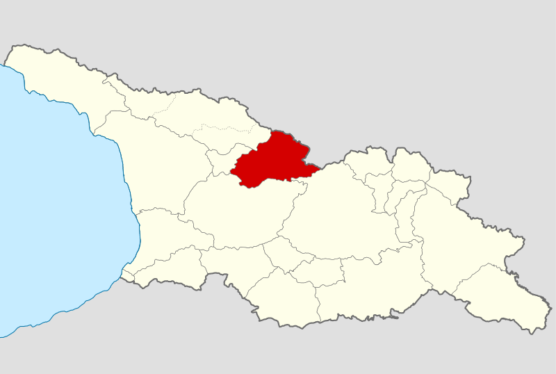
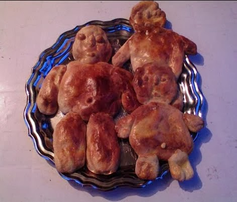

ახალი წელი რაჭაში

რაჭაში, ახალი წლის წინა საღამოს, ოჯახის უფროსი „სამკლოვიარო გერგვს“ აკეთებდა. ამისთვის ცხრა ვაზს თითო რქას შეაჭრიდა, მათ ერთმანეთს შეაგრეხდა, მორკალავდა და შუაში ჯვრად თხილის დაჩიჩილაკებულ ჯოხებს ჩაუყენებდა. ამ ჯოხებს გარეთ გამოშვერილ წვეროებზე ვაშლებს წამოაცვამდნენ, ბაძგის მწვანე ტოტებით მორთავდნენ და ზედ საახალწლო განატეხს დაადებდნენ.
„გფარავდეთ მრავალძალის წმინდა გიორგი! შეგეწიოთ ყოვლადწმინდა ხოტევი და ნიკორწმინდა! აგარა და უღეში, ღმერთმა მოგცეთ ნუგეში“, — ამ სიტყვებით ლოცავდა რაჭაში მეფეხე ოჯახს. თუ წინა წელს მის ფეხს ოჯახი კარგად დასცდიდა, მას კიდევ სამი წლით ირჩევდნენ. ამ სამი წლის განმავლობაში მეკვლე ოჯახს პირველი მიულოცავდა ახალი წლის დადგომას ღვინის დოქით, მოხარშული ლორით, შემწვარი წიწილით, ვაშლში ჩარჭობილი ხურდა ფულით, ჩიჩილაკითა და სანთლით ხელში; დალოცავდა ოჯახს, საბძელს, ნალიას, მერე კი იწყებოდა ლხინი. რაჭულ საახალწლო სუფრას ამშვენებდა ლობიანები, ღვინო, ლორი, თაფლი, კაკალი, ტყლაპი, ჩირი და ვაშლ

ზემო რაჭაში, საახალწლოდ, ორ ბაჭულს აცხობენ, ერთს — ახალი წლისთვის, მეორეს — ძველისთვის. აცხობენ აგრეთვე ადამიანის სახის კაც-ბასილას და ერთ დიდ პურს — „კერია-ბერიას“, რომელსაც სხვადასხვა სახეებით აჭრელებენ. ამ ნამცხვრებს ოჯახის უფროსი ცხრილზე დაალაგებს და ბეღელში შეინახავს. მამლის პირველი ყივილისას „მაკვრიელი“ ან მეკვლე ცეცხლს დაანთებს. შემდეგ გარეთ გავა, მარხილზე დაწყობილ ნეკერს მოტეხავს, ჩიჩილაკს აიღებს და ბეღელში შევა. შემდეგ შინ შემოვა ლოცვით „შემოვდგი ფეხი გწყალობდეთ ღმერთი. დიამც მამივა ახალი წელი: შეძენის და მოგების, მშვიდობის და კარგად ყოფნის, ვაჟიანობის, ღვინიანობის, პურიანობის“. შემდეგ წყლის მოსატანად წავა, მის დაბრუნებამდე ყველანი დგებიან. მეკვლე ყველას ხელპირს დააბანინებს. საუზმის დროს კი, ოჯახის ყველა წევრს „კერია-ბერიას“ უნაწილებენ.